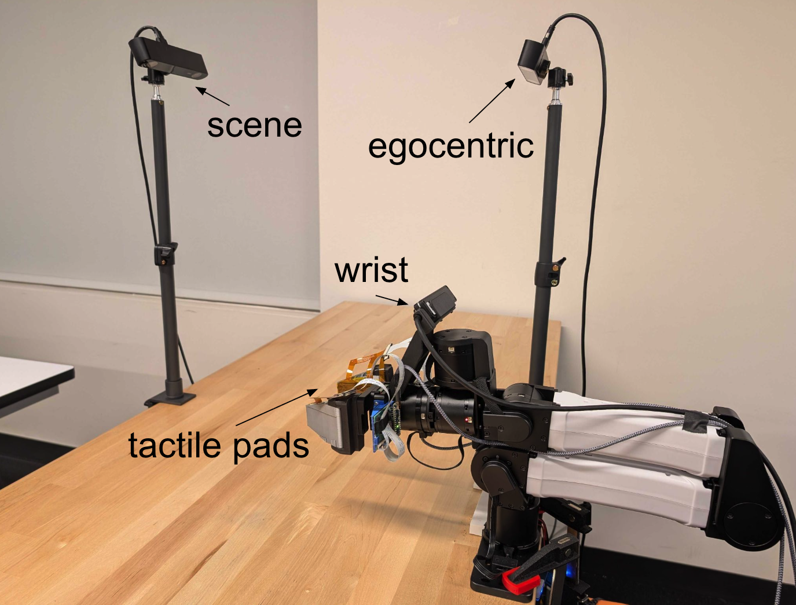
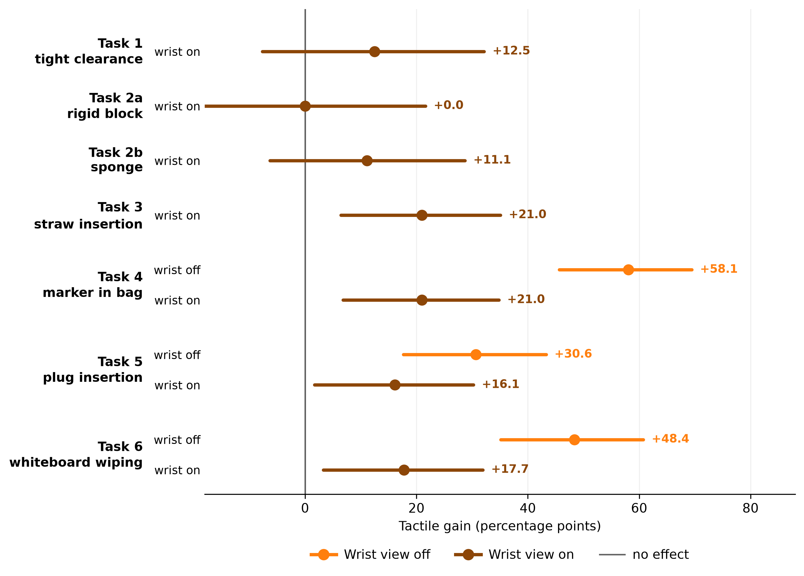
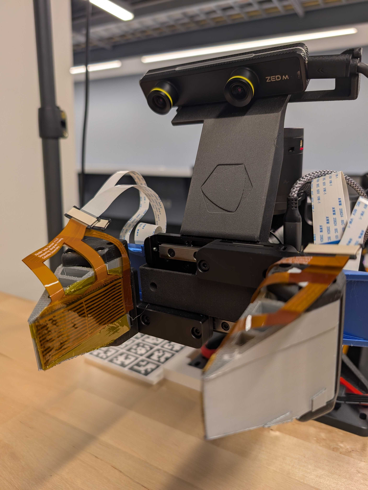
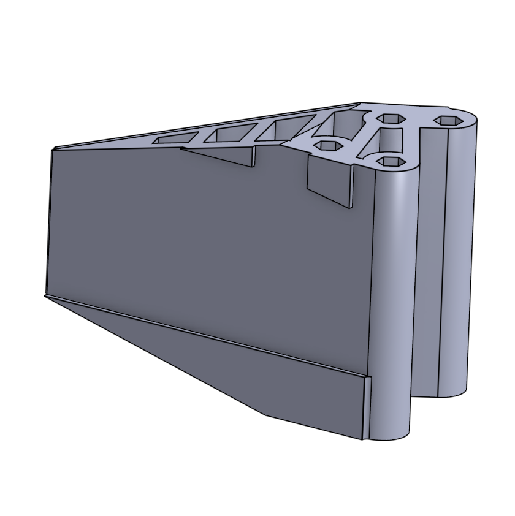

1
Low-cost tactile integration
Two FlexiTac tactile arrays built into compliant gripper fingers, one per finger.
CoRL 2026 · 3rd Workshop on Dexterous Manipulation
Toyota Research Institute
Finger-mounted tactile sensing lets a policy recover the performance advantage of wrist cameras using external vision and touch alone.
Success-rate differences in percentage points (pp) on three contact-rich tasks, with demonstrations and learning procedure held fixed.
Learned manipulation policies often rely on wrist-mounted cameras for close-range visual feedback that complements external views of the workspace. However, contact-rich manipulation requires establishing and maintaining contacts that can remain hidden even from wrist cameras. Tactile sensors mounted on fingers can reliably and directly measure contact, without needing visual access. In this work, we show that this feedback enables policies to recover the performance advantage of wrist cameras using external vision and touch alone. Our approach incorporates two low-cost tactile arrays into a visuotactile ACT policy, without wrist images during training or deployment. We evaluate six real-world tasks spanning placement, insertion, occluded retrieval, and sustained-contact tool use. On three contact-rich tasks, we independently vary wrist-camera and tactile availability while keeping the demonstrations and learning procedure fixed. Adding wrist cameras improves success by 18.3–28.3 percentage points over external vision alone. Adding tactile sensing instead improves success by 31.7–60.0 percentage points and yields higher observed success than vision-only policies with wrist cameras on all three tasks, with significant advantages on two under Holm-corrected tests. These results support finger-mounted tactile sensing as an effective alternative to wrist cameras in the evaluated contact-rich settings.
Two FlexiTac tactile arrays built into compliant gripper fingers, one per finger.
Vision-only and tactile-augmented policies compared across six tasks, with wrist-camera availability explicitly varied.
Evidence for where tactile input helps most (occlusion, insertion, and sustained contact) and where it does not.
Camera images and left/right tactile maps are encoded separately, fused into one multimodal feature, and passed to an action-chunking transformer policy that outputs a short sequence of robot actions.

Six real-robot tasks. Three are contact-rich or visually occluded (T4–T6) and are the focus of this study; three supporting tasks (T1–T3) cover tight-clearance placement, rigid block and sponge placement, and straw insertion. Videos in this section show teleoperated demonstrations collected for training.
A marker is hidden inside an opaque bag, so no camera can see the grasp. The policy has to find and secure it by touch.
OcclusionAligning a plug with a socket within millimeters. In-hand pose and contact forces matter more than what the camera sees.
Contact-richKeeping steady contact with a surface while wiping. Too little pressure leaves marks; too much stalls the motion.
Sustained contact| Task | Tactile relevance | Vision only | Vision + tactile | Δ |
|---|---|---|---|---|
| Wrist camera on | ||||
| T1Tight-clearance placement | Precise contact | 50.0% | 63.3% | +13.3 pp |
| T2aRigid block placement | Low / rigid contact | 60.0% | 60.0% | 0.0 pp |
| T2bSponge placement | Compliance / deformation | 76.0% | 88.0% | +12.0 pp |
| T3Straw insertion | Contact / insertion | 43.3% | 65.0% | +21.7 pp |
| Wrist camera off | ||||
| T4Marker in bag | Controlled tactile isolation | 21.7% | 81.7% | +60.0 pp |
| T5Plug insertion | Alignment / insertion | 15.0% | 46.7% | +31.7 pp |
| T6Whiteboard wiping | Tool manipulation | 21.7% | 71.7% | +50.0 pp |

| Policy | Wrist camera | Tactile |
|---|---|---|
| Vision-only, no wrist | Off | Off |
| Vision + tactile, no wrist | Off | On |
| Vision-only, wrist | On | Off |
| Vision + tactile, wrist | On | On |
Every configuration uses the scene and egocentric cameras. “Vision-only” does not mean “no camera.” Tasks 1–3 are evaluated in the wrist-on configurations only.
Matched autonomous rollouts with the wrist camera off. Each video shows the scene camera, the egocentric camera, and the live left and right tactile heatmaps. Tactile signals are recorded in every trial for visualization, but only the vision + tactile policy receives them as input. These clips illustrate typical behavior; the success rates above are the evidence. All clips play in real time.
Without vision inside the bag, the vision-only policy closes on empty fabric. With tactile feedback, the policy detects contact with the object and adjusts its grasp before lifting.
The vision-only policy stalls against the socket face. With tactile feedback, the policy senses the misalignment and corrects it before completing the insertion.
The vision-only policy loses contact partway through the stroke. With tactile feedback, the policy keeps steady pressure across the full surface.


Each finger of the parallel-jaw gripper carries a flexible FlexiTac tactile sensor on a 3D-printed fingertip, giving the policy a 32×16 pressure map from both sides of the grasp. A ZED Mini stereo camera mounted above the gripper serves as the wrist camera in the wrist-on configurations.
A single robot arm operates on a tabletop workspace, observed by a scene camera, an egocentric camera, and an optional wrist camera.
Image and tactile streams are encoded separately and fused as input to an action-chunking transformer (ACT), trained by imitation on teleoperated demonstrations.
Demonstrations are collected by teleoperation. Every policy configuration is evaluated on the same set of trials per task.
Full implementation details are in the paper.
@inproceedings{yang2026tactile,
title = {Tactile Sensors Are an Effective Substitute for Wrist Cameras
in Contact-Rich or Occluded Manipulation},
author = {Yang, Aijia and Tangri, Arsh and Zakharov, Sergey
and Jatavallabhula, Krishna Murthy},
booktitle = {3rd Workshop on Dexterous Manipulation,
Conference on Robot Learning (CoRL)},
year = {2026}
}We thank our colleagues at Toyota Research Institute for their support and helpful discussions.